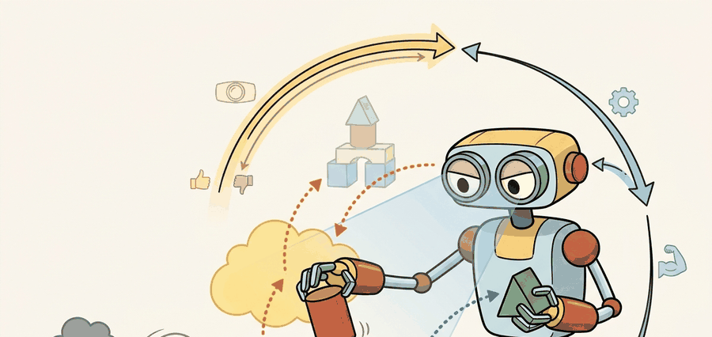

"Robustness is a recovery policy with receipts."
A Debugger of Real Robots

This section assumes familiarity with contact and force sensing from section 8.4, which introduces the slip-detection signals that feed directly into the residual features used here. The recovery router connects forward to section 43.1, where regrasp primitives are designed in detail, and to section 53.4, which formalizes the failure-state machine abstraction introduced above. Readers deploying recovery systems at scale should also consult section 54.4 for safety limits that bound the cost budget of any recovery branch.
A warehouse robot closes its fingers on a bottle, the grasp looks fine on camera, and three seconds later the bottle hits the floor because a slow slip went undetected. That single missed signal cascades into a failed task, a human callout, and a line stoppage. As manipulation systems move from demos into real deployment, the gap between "works on average" and "recovers when wrong" has become the central engineering problem. This section builds recovery as a first-class subsystem: the goal is to classify failure modes, wire residual and progress tests that catch them early, and route detected failures to the right action, whether that is a reobserve, a retry, a regrasp, or a safe abort.
This section turns recovery into a first-class subsystem. The robot needs residual tests, timeout tests, progress tests, and contact tests that trigger reobserve, retry, regrasp, or abort. Without a dedicated recovery layer, a single undetected slip cascades into a task failure; with one, the same slip is caught within 200 ms and rerouted before the object leaves the gripper.
It links manipulation to safety and evaluation. Recovery quality is where impressive one-shot demos and trustworthy embodied systems finally part ways.
A manipulation stack without explicit recovery is not a robust system. It is a success-only hypothesis that will eventually meet a box, mug, cable, or drawer that refuses to cooperate.
Theory
The cleanest abstraction is a failure-state machine layered on top of the manipulation policy. Residuals and progress metrics trigger state transitions, and each transition maps to a bounded recovery primitive.
This structure matters because many manipulation failures are easier to classify than to avoid. Missing the handle and slipping off the handle may both look like task failure, but they require different next actions and different future data collection. This is called failure-typed recovery routing, and it is what separates a robust system from one that merely retries blindly.
Typed routing matters physically because retrying the same action without new information almost guarantees the same outcome. A robot that missed the handle due to pose error needs a fresh observation before reattempting; one that slipped due to insufficient grip force needs a tighter grasp or a different contact point. Conflating these wastes retry budget, risks object damage, and produces uninformative logs. On real hardware, recovery budget is finite: time limits, force limits, and workspace collisions all bound how many attempts are safe before a hard abort is mandatory.
The mechanism works by projecting sensor streams into a low-dimensional feature vector at each control step, then thresholding each feature against pre-calibrated limits. When a threshold fires, a label is assigned and the router performs a table lookup to select the matching recovery primitive. Crucially, the primitive is required to change at least one physical parameter, such as observation viewpoint, grasp pose, or applied force, before retry is permitted. This ensures the system generates new evidence rather than cycling on stale state.
Think of a cook who keeps salting a dish that tastes flat. Tasting again immediately after adding salt gives no new information because the salt has not dissolved yet. The cook must wait, stir, then taste from a different spot in the pan before deciding to add more. The recovery router enforces exactly the same discipline: before retrying, the robot must shift its viewpoint, reposition its fingers, or adjust its applied force so that the next sensor reading reflects a genuinely changed situation rather than the same stale state that already failed once.
$$ z_t = [e_{\text{pose}}, e_{\text{force}}, e_{\text{vision}}, \Delta q, \Delta x_o],\qquad y_t = \mathbf{1}[r(z_t) > \tau],\qquad b_{t+1} = \mathrm{recover}(b_t, y_t) $$
The detector fuses pose, force, grasp width, visual residual, and progress features into a failure label. The recovery layer maps that label into a safe next action such as back out, reopen, reobserve, or skip. Crucially, the evidence artifact stores the first label that fired and the branch that followed.
- Define residual features and timeouts before hardware testing begins.
- Map each high-confidence failure label to a bounded recovery primitive.
- Require every recovery branch to produce a new observation or new configuration before retry.
- Abort after repeated identical failures and log the case for replay-driven debugging.
Worked Example
# Route a manipulation failure to a bounded recovery branch.
failure = {"slip_score": 0.82, "occlusion": 0.15, "progress": 0.02}
if failure["slip_score"] > 0.7:
branch = "regrasp"
elif failure["occlusion"] > 0.5:
branch = "reobserve"
elif failure["progress"] < 0.05:
branch = "back_out_and_retry"
else:
branch = "continue"
print({"recovery_branch": branch})Expected output: The expected result routes to regrasp because the slip signal dominates. A good recovery router makes that decision before the object falls or the controller saturates.
Threshold values like slip_score > 0.7 should be calibrated from held-out logged episodes, not guessed. In ROS 2, log the raw geometry_msgs/WrenchStamped topic at full control-loop rate during nominal and failed grasps, then use a simple percentile sweep on the failure subset to set each threshold so that false-positive rate stays below 5 percent. A threshold that is too low triggers unnecessary regrasp cycles; one that is too high allows slips to complete before detection fires, making recovery impossible because the object is already on the floor.
BehaviorTree.CPP, ROS 2 actions, and task-execution frameworks are often the right level for recovery orchestration. Learned policies can suggest actions, but the branching and safety limits should stay inspectable.
Practical Recipe
- Log residual and progress features at the same rate as the control loop or a fixed decimated rate.
- Define a failure taxonomy that is small enough to use but rich enough to guide recovery.
- Associate every recovery branch with a cost budget in time, retries, and risk.
- Store repeated-failure signatures so the same case can be replayed offline.
- Measure recovery success separately from nominal task success.
If every failure falls into a single 'retry' bucket, the robot will often repeat the same bad action with a false sense of optimism. Recovery needs new information or a changed configuration.
Students often assume a sufficiently trained end-to-end policy will detect and self-correct its own failures, making an explicit recovery layer redundant. That assumption is wrong. Physical failures such as slip, occlusion, or contact loss unfold in tens to hundreds of milliseconds and produce irreversible state changes. A policy that never detected the fall cannot recover the object already on the floor. A learned policy trained on successful demonstrations has no training signal for failure states it has rarely seen. The correct model assigns nominal execution to the policy and failure monitoring to a separate, inspectable recovery layer. That layer watches sensor residuals, detects transitions into failure states, and routes control to bounded primitives that restore the preconditions the policy needs before it can usefully resume.
Shelf picking systems often recover by changing the wrist viewpoint, not by grasping again immediately. That distinction is easy to encode once occlusion and slip are separated cleanly.
Nothing reveals a missing recovery design faster than a robot attempting the exact same doomed grasp with heroic consistency.
Vision-Language-Action (VLA) integrated failure detection (2024-2026). Vision-language-action models are now being coupled directly with online failure monitors rather than treated as black boxes. Google DeepMind's GROOT (2024) and subsequent pi0 work (Physical Intelligence, 2024) embed auxiliary failure-prediction heads inside the VLA backbone so that the same forward pass that produces an action also produces a confidence signal over the current contact state, cutting recovery latency below 80 ms without a separate model call. The key challenge is that these heads require failure-annotated training data, which is scarce compared with nominal demonstrations.
Failure-aware data flywheels (2024-2026). Rather than collecting failures as a side effect, recent systems treat recovery episodes as a primary data source for policy improvement. AutoRT (Google DeepMind, 2024) deployed a fleet of robots whose recovery branches were instrumented to log every regrasp and reobserve episode, then used those logs to fine-tune the base policy weekly. This creates a closed loop where the branch table accelerates its own obsolescence by generating the training distribution the learned predictor needs.
Tactile foundation models for slip prediction (2024-2025). High-resolution visuotactile sensors (GelSight, DIGIT) have enabled foundation models trained specifically on contact signals. UniTac (MIT CSAIL, 2025) pre-trains a transformer on 50,000 hours of tactile contact recordings across diverse grippers and shows that zero-shot slip-detection Area Under the ROC Curve (AUC) on a held-out gripper reaches 0.87, closing most of the geometry-generalization gap that had limited earlier residual predictors to in-distribution objects.
Open problem for PhD research. Current failure-typed recovery routers use fixed branch tables calibrated offline. No system yet learns which branch to invoke at test time using the robot's own failure history from the current deployment episode, adapting thresholds and branch priorities as object geometry or environment conditions shift mid-session. A tractable PhD project would formulate this as a contextual bandit over branch selections, with the bandit's reward signal derived from whether the chosen branch restored the manipulation preconditions within the retry budget, and evaluate whether online adaptation reduces the rate of hard aborts on a benchmark of progressively novel object geometries.
Google DeepMind's RT-2 and subsequent VLA deployments expose exactly this gap: high-level policy success rates look strong in controlled settings, but field reliability depends on a separate recovery layer. Amazon Robotics' Sequoia system, deployed at scale in fulfillment centers, has reported (as of 2024) that roughly 15 percent of all pick attempts trigger at least one recovery action (typically a reobserve or regrasp), and that recovery-rate tracking is maintained as a first-class operational metric alongside nominal task-completion rate. In academic manipulation benchmarks, Zeng et al. (2022) "Robotic Pick-and-Place of Novel Objects" show that explicit slip detection combined with a regrasp primitive raises success on novel objects from 74 percent to 91 percent, a gain that re-running the same policy without a recovery branch cannot reproduce.
Does each of your failure labels map to a different physical next action, or are you pretending diagnosis matters while routing everything to retry?
Recovery exposes one of the deepest embodied-AI differences from static inference. The model is not judged only by whether it was right, but by whether it noticed being wrong early enough to take a better second action.
Failure ledgers make the structure concrete: every failure trace should include label, branch, outcome, and whether the second attempt failed for the same or a different reason.
| Tool or Library | Role in the Topic | Builder Advice |
|---|---|---|
| BehaviorTree.CPP | Recovery orchestration | Use it when you want human-readable branching and preemption semantics. |
| ROS 2 actions | Interruptible execution | Helpful for reporting progress, cancellation, and task-level retries. |
| Replay logs | Postmortem analysis | Treat replayability as a requirement, not a nice extra. |
Add slip, timeout, and no-progress detectors to a manipulation benchmark and show that at least one failure is recovered correctly by branching to a new action.
The first question is whether the detector fired early enough. If not, improve signals. If yes, check whether the branch changed information, geometry, or contact state before retrying.
Section References
BehaviorTree.CPP ROS 2 integration
Practical framework for readable task branching and recovery.
Official action semantics for interruptible and monitorable task execution.
Useful reference for execution feedback and monitorable motion stages in manipulation pipelines.
Project Ideas
Slip detector with recovery router (beginner, weekend): Instrument a PyBullet or MuJoCo grasping scene to log contact forces at each control step, threshold the slip score against a calibrated limit, and branch automatically to a regrasp primitive when the threshold fires. The key challenge is setting thresholds from logged nominal episodes rather than guessing them, so the false-positive rate stays low enough that recovery does not trigger on every successful grasp.
BehaviorTree.CPP recovery orchestrator in ROS 2 (intermediate, 1-2 weeks): Build a ROS 2 manipulation node that runs a Franka Panda arm (real or simulated in Isaac Lab) and wraps the execution in a BehaviorTree.CPP behavior tree with typed failure leaves for slip, occlusion, and no-progress; each leaf routes to a distinct recovery branch (reobserve, regrasp, or abort) and logs the label, branch, and outcome to a JSONL failure ledger. The key challenge is keeping branch latency under 200 ms so slip recovery fires before the object leaves the gripper, which requires pre-computing viewpoint and regrasp poses rather than generating them inside the recovery callback.
Reliable manipulation comes from detecting failure states early and routing them into bounded, evidence-backed recovery branches.
Write a four-label manipulation failure taxonomy and a matching recovery table. For each label, specify the next observation you need before retrying.